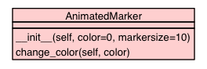

Trees
Indices
Help
Mobile Security & Privacy (MoSP) Simulator
Package mosp
::
Package gui
::
Module playerChamplain
:: Class AnimatedMarker
[
hide private
]
[
frames
] |
no frames
]
Class AnimatedMarker
source code

The AnimatedMarker extends the champlain.Marker
Instance Methods
[
hide private
]
__init__
(
self
,
color
=
0
,
markersize
=
10
)
Init the AnimatedMarker.
source code
change_color
(
self
,
color
)
Change AnimatedMarker's color.
source code
Trees
Indices
Help
Mobile Security & Privacy (MoSP) Simulator
Generated by Epydoc 3.0.1 on Sun Jul 6 13:59:49 2014
http://epydoc.sourceforge.net